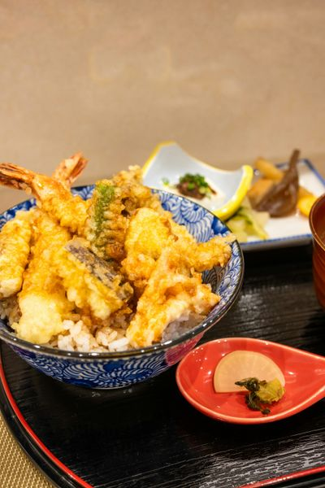
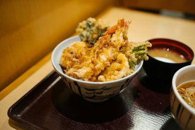

Tempura Variada
Crujiente y deliciosa, fritura japonesa tradicional.
Descripción
La tempura es un plato japonés consistente en mariscos y verduras rebozados y fritos.
Se sirve con salsa tentsuyu y destaca por su textura ligera y crujiente.
Galería

Tempura de Camarón

Tempura de Verduras
Tempura Mixta